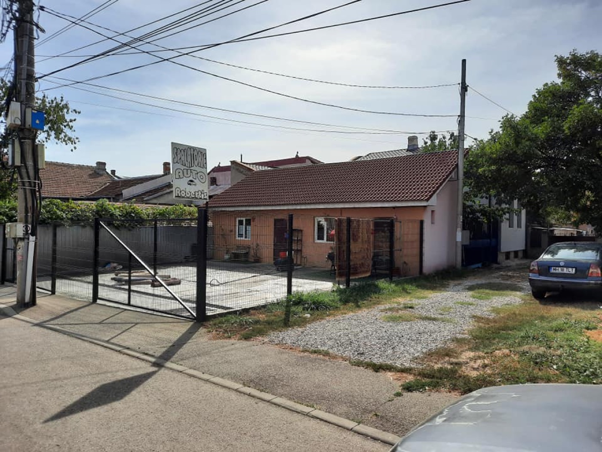
Spălare exterioară & interioară
Spumă activă, clătire, aspirat și curățare în interior — mașina ta, impecabilă pe dinăuntru și pe dinafară.
De la spălarea completă la curățarea motorului, polish și restaurarea farurilor — la Robert's ne ocupăm de mașina ta cu grijă și răbdare, în inima Severinului.
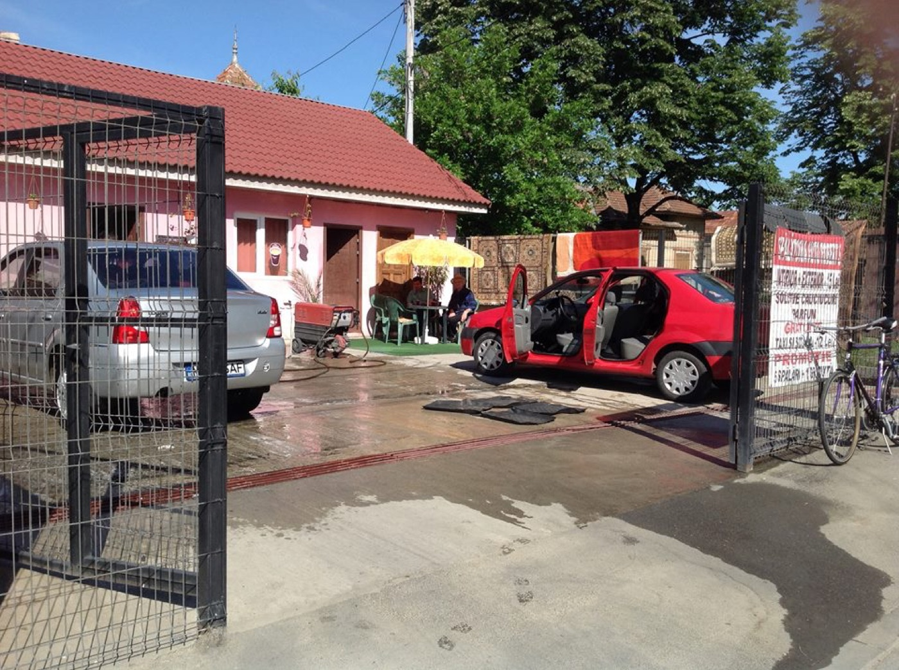
La Robert's nu spălăm mașini pe bandă rulantă. Fiecare mașină primește atenția pe care o merită: spălare exterioară cu spumă, curățare interioară, aspirat și finisaje, ca să pleci cu o mașină care arată și miroase ca nouă.
Pe lângă spălare, ne pricepem și la lucrurile mai fine: curățarea compartimentului motor, polish pentru vopsea, restaurarea farurilor îngălbenite și tratament cu ozon pentru mirosuri și igienizare.
Ne găsești în Drobeta-Turnu Severin, în P-ța Mihai Bravu — treci pe la noi și lasă mașina pe mâini bune.
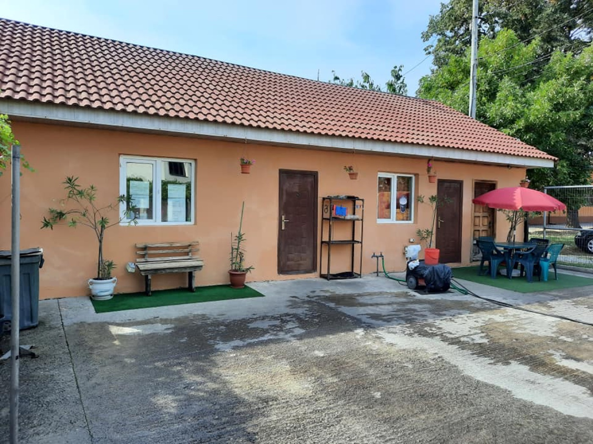
De la o spălare rapidă până la un detailing complet — ne ocupăm de fiecare detaliu.

Spumă activă, clătire, aspirat și curățare în interior — mașina ta, impecabilă pe dinăuntru și pe dinafară.
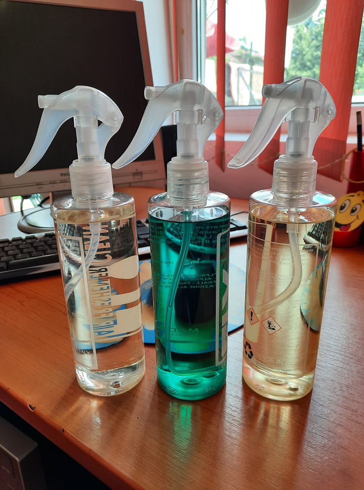
Degresăm și curățăm compartimentul motor cu grijă, ca totul să arate curat și îngrijit sub capotă.
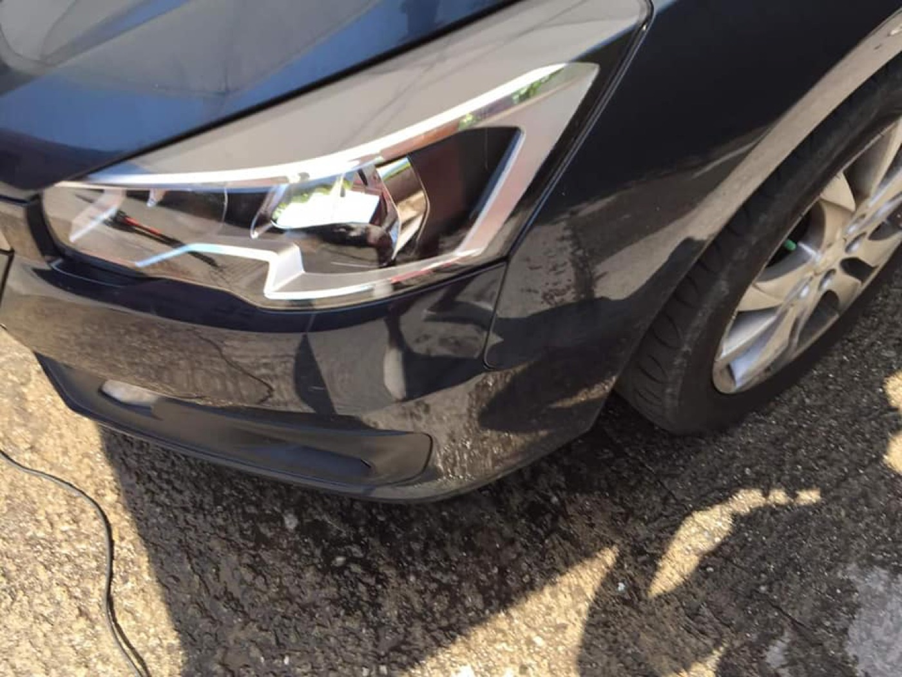
Redăm strălucirea vopselei cu mașina de polish și paste dedicate — un plus de luciu pentru caroseria ta.
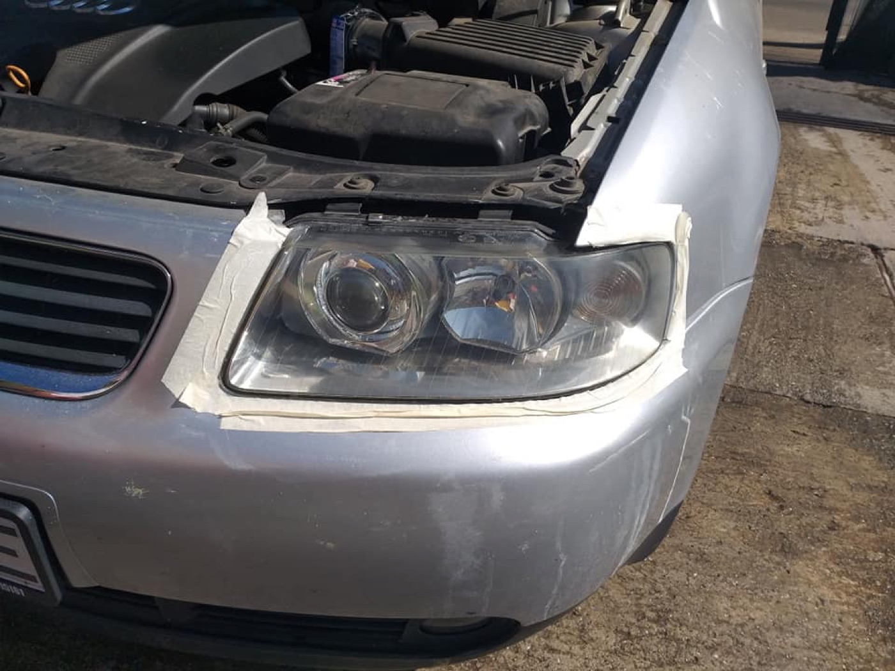
Șlefuim și lustruim farurile mate sau îngălbenite, ca lumina să fie mai clară și mașina să arate mai tânără.
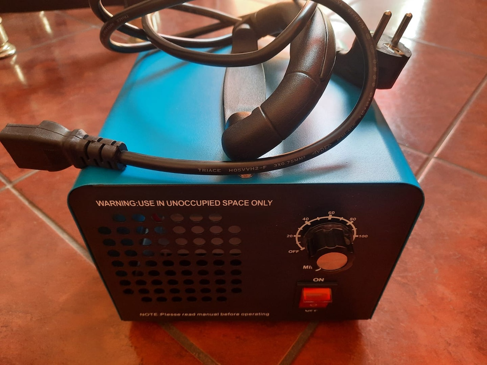
Igienizare cu generator de ozon pentru habitaclu — îndepărtează mirosurile neplăcute și împrospătează aerul.
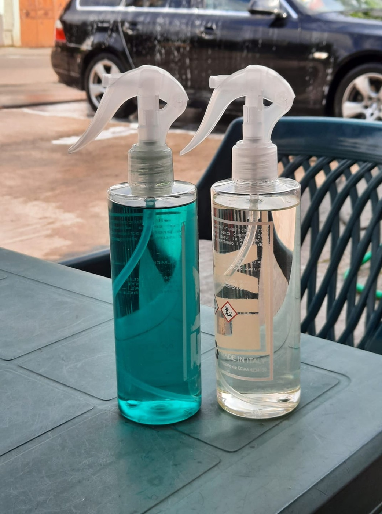
Încheiem cu detalii care se simt — odorizante și finisaje pentru un interior proaspăt după fiecare spălare.
Interior, exterior și motor — nu ne grăbim până nu arată bine.
În P-ța Mihai Bravu, central în Drobeta-Turnu Severin.
Polish, faruri, ozon — nu doar o spălare simplă.
Produse profesionale și atenție la fiecare mașină.
Câteva dintre mașinile și lucrările noastre.
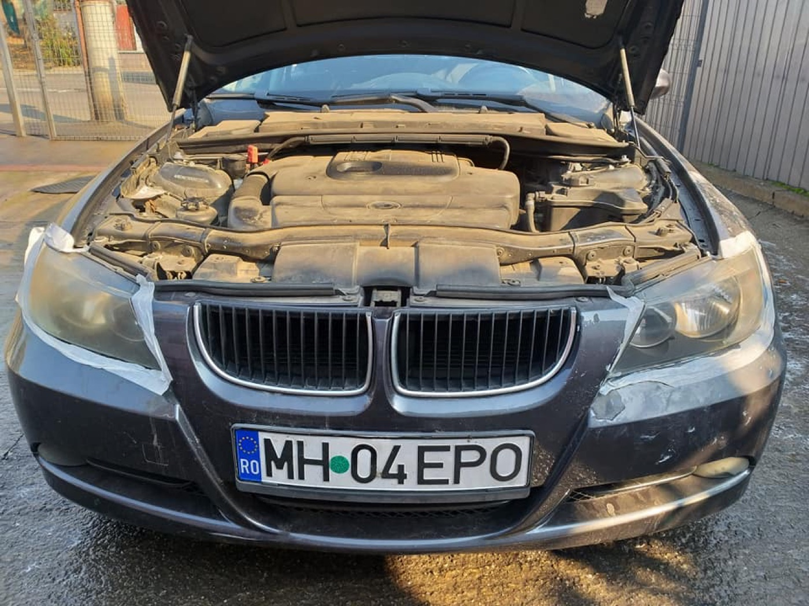
Curățare motor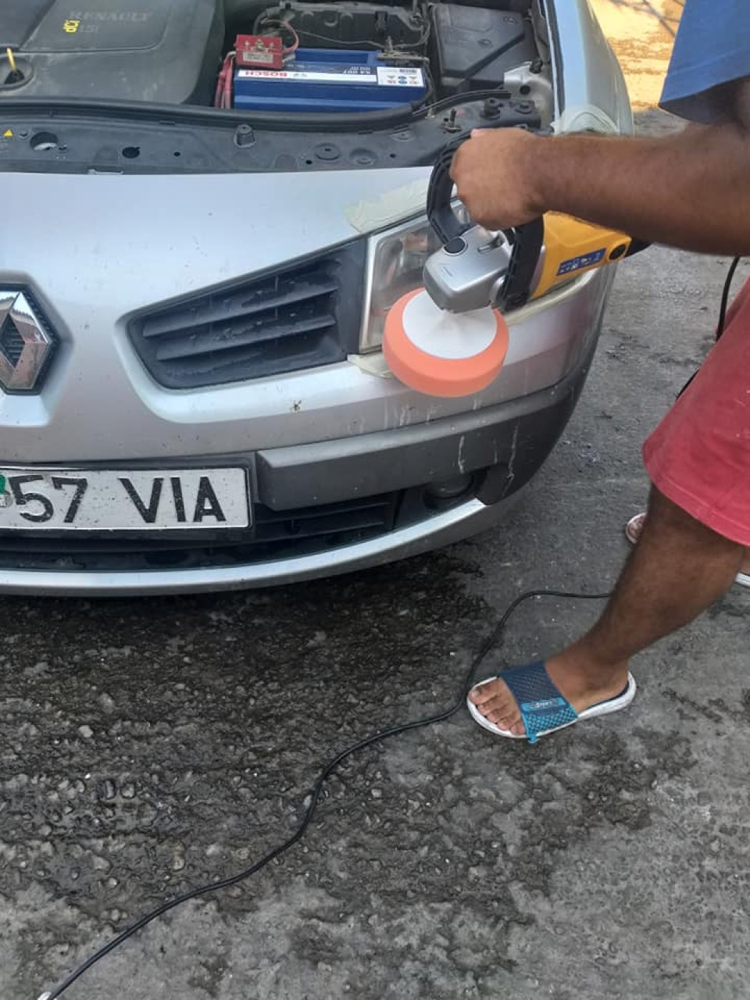
Polish în lucru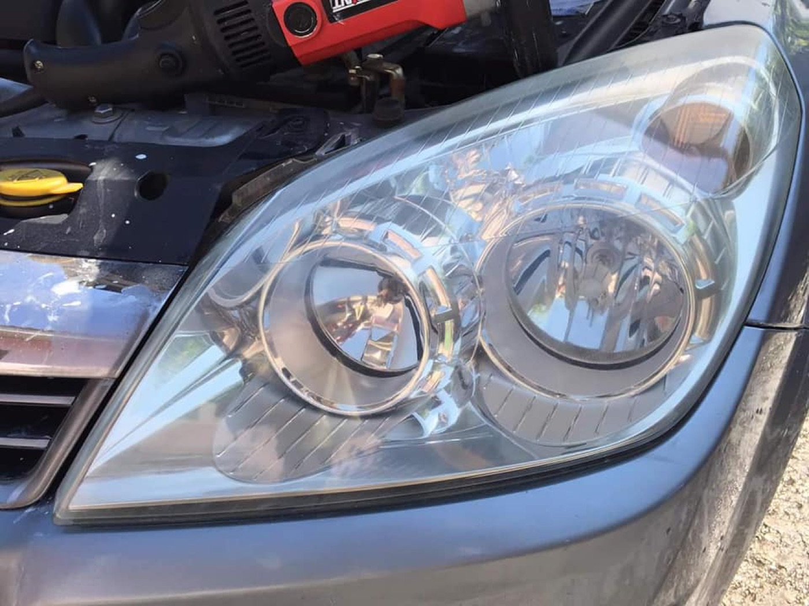
Faruri ca noi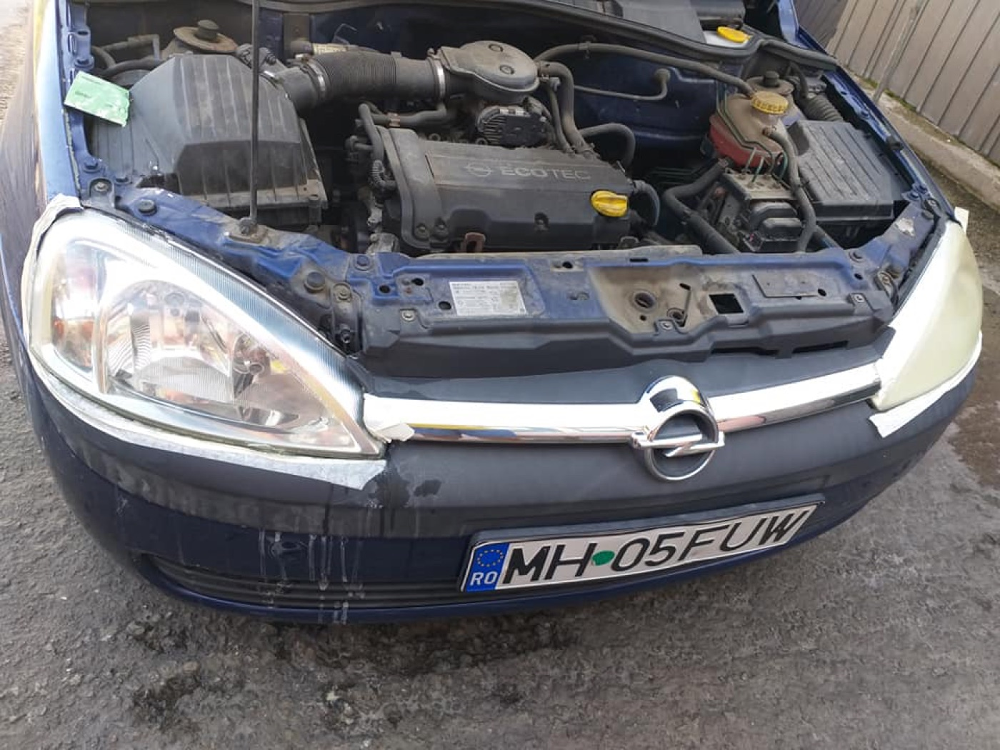
Sub capotă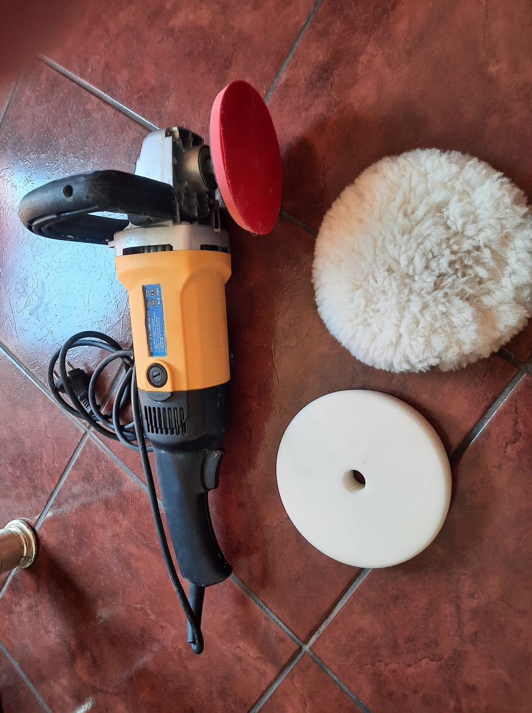
Sculele noastrePeste 300 de persoane au trecut pe la noi. Ne bucurăm de fiecare mașină care pleacă strălucind.
„O echipă serioasă, care se ocupă de mașină ca și cum ar fi a lor. Am rămas mulțumit de fiecare dată.”
„Curățarea motorului și restaurarea farurilor au ieșit excelent — mașina arată cu ani mai tânără.”
„Spălare completă, interior impecabil și un miros proaspăt după ozon. Revin cu drag.”
Pentru program, disponibilitate și prețuri, scrie-ne pe pagina noastră de Facebook sau treci direct pe la spălătorie.
Spălare exterioară și interioară · curățare motor · polish · restaurare faruri · tratament ozon · odorizante